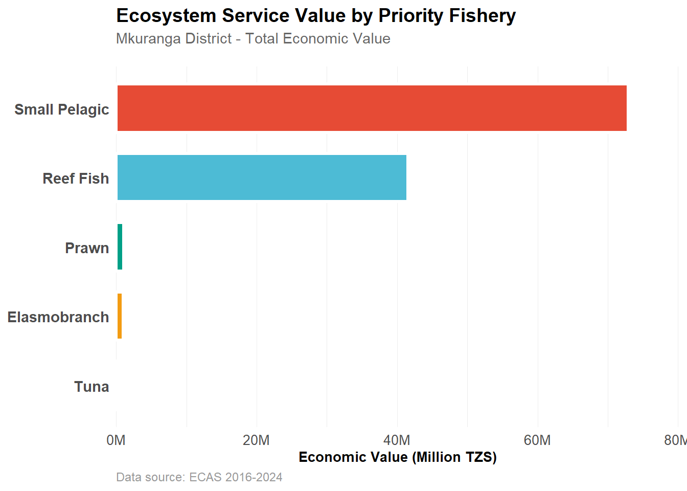
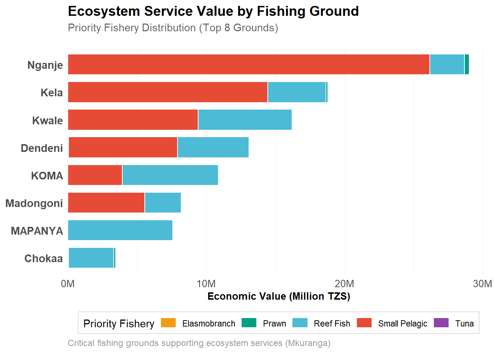
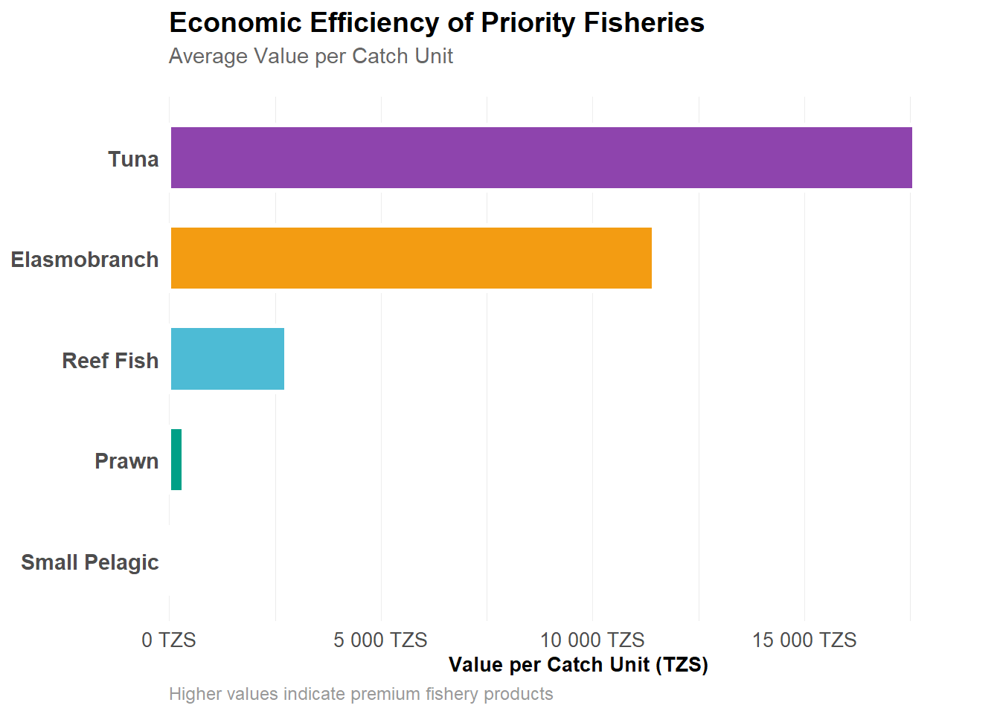
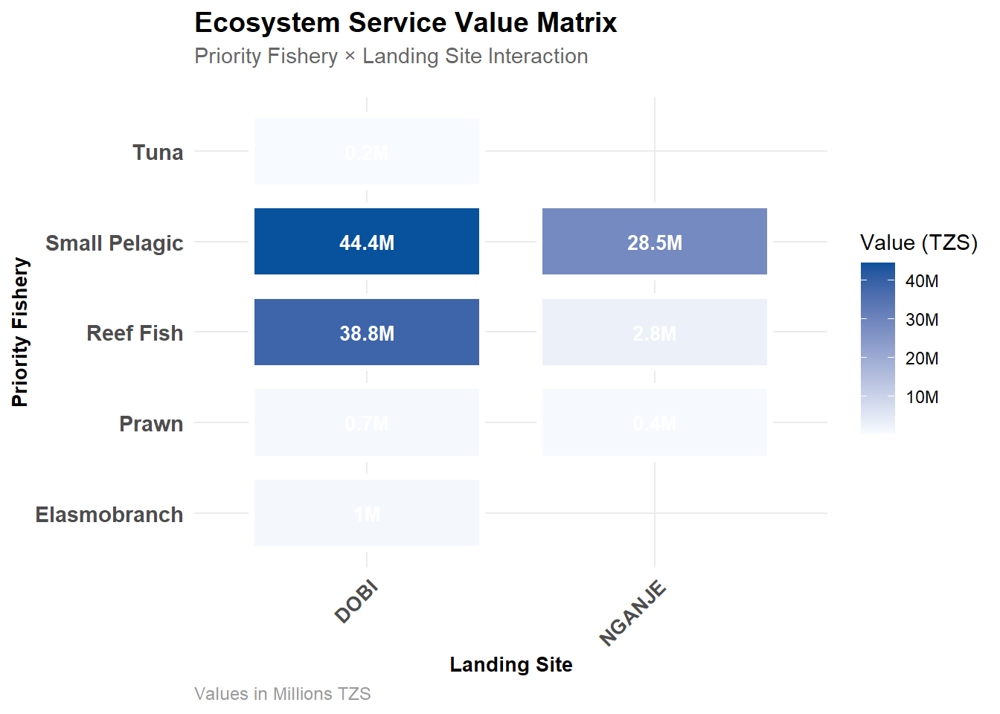

Code
require(tidyverse)
require(echarts4r)
require(tidyplots)
require(sf)
require(sfhotspot)
require(terra)
require(tidyterra)
require(gt)
require(d3po)
require(ggalluvial)
require(patchwork)
library(scales)
library(ggtext)
library(showtext)Priority, marine resources, fisheries, coastal Tanzania, Mkuranga
Mkuranga District represents a vital node in Tanzania’s marine fisheries network, generating substantial economic value while supporting food security for coastal communities. Through comprehensive analysis of catch composition, value generation, and spatial distribution, we uncover the ecosystem services that depend critically on well-managed priority fisheries.
Mkuranga District is located in Pwani Region along Tanzania’s Indian Ocean coast, representing one of the country’s most economically productive marine zones. Situated adjacent to the Dar es Salaam metropolitan area, Mkuranga occupies a unique position at the intersection of coastal urban development and traditional fishing communities. The district’s coastal geography includes shallow bays, reef systems, and deeper offshore grounds that support diverse fish assemblages. Its proximity to major markets in Dar es Salaam creates both economic opportunities and pressure on fisheries resources.
The district has a diverse ecological ecosystem including coastal wetlands, mangrove systems, and coral reef ecosystems that provide nursery habitat and breeding grounds for commercially important fish species. These coastal habitats directly support the priority fisheries analyzed in this report.
Mkuranga’s fisheries sector represents a complex socioeconomic system supporting:
Within Tanzania’s broader fisheries economy, Mkuranga holds strategic importance:
Mkuranga’s fisheries depend on three distinct marine ecosystems:
The East African Monsoon system (southeast monsoon June-October, northeast monsoon November-March) strongly influences fishing seasonality, catch composition, and fisher income patterns—a factor evident in annual variations in the data analyzed here. The two major landing sites (DOBI and NGANJE) analyzed in this report each operate under different BMU management structures, which partially explains the distinct fishery compositions observed.
Our analysis of fishery data from 2016-2024 reveals a district of surprising economic complexity. With 116.8 million TZS in total ecosystem service value derived from 1.1 million catch units, Mkuranga’s fisheries exemplify the efficiency gaps between high-volume subsistence species and high-value premium products. This district concentrates its fishing activities across just two major landing sites (DOBI and NGANJE) yet utilizes 23 distinct fishing grounds, creating a spatially distributed ecosystem service network that requires nuanced management.
require(tidyverse)
require(echarts4r)
require(tidyplots)
require(sf)
require(sfhotspot)
require(terra)
require(tidyterra)
require(gt)
require(d3po)
require(ggalluvial)
require(patchwork)
library(scales)
library(ggtext)
library(showtext)The five priority fisheries in Mkuranga each serve distinct ecological and economic roles:
Small Pelagic fisheries provide the volume backbone, delivering 62.4% of total economic value (728.9M TZS) from 99% of catch units. These species—small, fast-growing fish like sardines and anchovies—sustain food security for the poorest communities while supporting export markets.
Reef Fish represents the value multiplier, generating 35.6% of total value (415.5M TZS) while constituting only 9.4% of catch volume. With an average value 27 times higher than small pelagics, reef fish fishing demonstrates the premium pricing for species targeted by higher-income consumers and export markets.
Premium Species (Tuna, Elasmobranch) command exceptional prices—reaching 17,597 and 11,447 TZS per unit respectively—but in much smaller quantities. These species require specific conservation attention given their vulnerability and economic importance.
mkuranga_data = read_csv('mkuranga_ecas_data.csv')# Filter data for Mkuranga district
mkuranga_data <- mkuranga_data |>
filter(district == 'Mkuranga') |>
filter(!is.na(priority), !is.na(landing_site), !is.na(fishing_ground)) |>
filter(count > 0, value > 0)
# Summary statistics by priority
priority_summary <- mkuranga_data |>
group_by(priority) |>
summarise(
total_count = sum(count, na.rm = TRUE),
total_value = sum(value, na.rm = TRUE),
avg_value_per_catch = mean(value / count, na.rm = TRUE),
n_records = n(),
n_landing_sites = n_distinct(landing_site),
n_fishing_grounds = n_distinct(fishing_ground),
.groups = "drop"
) |>
arrange(desc(total_value))The table below presents comprehensive summary statistics for each priority fishery category in Mkuranga. It reveals the fundamental trade-offs between volume and value: Small Pelagic fisheries dominate by catch quantity but generate lower per-unit value, while premium species like Tuna command exceptional prices despite minimal catch volumes. The number of landing sites and fishing grounds for each priority shows the geographic distribution and infrastructure requirements, with implications for ecosystem management and conservation planning.
priority_summary |>
gt() |>
fmt_number(columns = c(total_count, total_value), decimals = 0) |>
fmt_number(columns = avg_value_per_catch, decimals = 1) |>
cols_label(
priority = "Priority Fishery",
total_count = "Total Catch",
total_value = "Total Value (TZS)",
avg_value_per_catch = "Avg Value/Unit (TZS)",
n_records = "Records",
n_landing_sites = "Landing Sites",
n_fishing_grounds = "Fishing Grounds"
) |>
cols_align(align = "center", columns = everything()) |>
cols_align(align = "left", columns = priority) |>
tab_header(
title = "Priority Fishery Summary Statistics",
subtitle = "Mkuranga District Ecosystem Services (2016-2024)"
) |>
tab_style(
style = cell_fill(color = "#f7f7f7"),
locations = cells_body(rows = seq(1, nrow(priority_summary), 2))
) |>
tab_style(
style = cell_text(weight = "bold", size = "medium"),
locations = cells_column_labels()
) |>
tab_style(
style = cell_borders(
sides = "bottom",
color = "#e0e0e0",
weight = px(2)
),
locations = cells_column_labels()
) |>
tab_options(
table.font.size = "14px",
table.border.top.style = "solid",
table.border.top.width = px(2),
heading.title.font.size = "16px",
heading.subtitle.font.size = "13px"
)| Priority Fishery Summary Statistics | ||||||
|---|---|---|---|---|---|---|
| Mkuranga District Ecosystem Services (2016-2024) | ||||||
| Priority Fishery | Total Catch | Total Value (TZS) | Avg Value/Unit (TZS) | Records | Landing Sites | Fishing Grounds |
| Small Pelagic | 990,940 | 72,893,500 | 101.4 | 2151 | 2 | 14 |
| Reef Fish | 103,473 | 41,553,688 | 2,766.6 | 848 | 2 | 22 |
| Prawn | 5,738 | 1,108,500 | 339.4 | 42 | 2 | 12 |
| Elasmobranch | 678 | 976,000 | 11,446.7 | 27 | 1 | 6 |
| Tuna | 490 | 238,000 | 17,597.2 | 6 | 1 | 5 |
Mkuranga’s fisheries converge at two critical infrastructure points: DOBI and NGANJE landing sites. DOBI dominates ecosystem services, handling 73% of total value, while NGANJE captures the remaining 27%. This concentration reflects both infrastructure capacity and historical fishing patterns, but also represents a vulnerability—any disruption at DOBI would severely impact district-level food and economic security.
The distribution of priority fisheries across these sites reveals different spatial strategies:
This differentiation matters for ecosystem management. DOBI’s diversity creates resilience through portfolio diversification, while NGANJE’s focus suggests opportunities for targeted conservation and market development.
This table disaggregates ecosystem service value across the district’s two major landing sites, revealing both geographic concentration and diversification patterns. DOBI landing site emerges as the dominant hub, handling a disproportionate share of Small Pelagic and Reef Fish catches. Understanding these site-specific compositions is critical for infrastructure planning, market development, and disaster resilience—the concentration of value at one site suggests both efficiency and vulnerability. The data also indicates which priority fisheries have established market pathways at each site, informing recommendations for supply chain diversification.
priority_landing <- mkuranga_data |>
group_by(priority, landing_site) |>
summarise(
total_count = sum(count, na.rm = TRUE),
total_value = sum(value, na.rm = TRUE),
.groups = "drop"
) |>
arrange(desc(total_value))priority_landing |>
arrange(desc(total_value)) |>
gt() |>
fmt_number(columns = c(total_count, total_value), decimals = 0) |>
cols_label(
priority = "Priority Fishery",
landing_site = "Landing Site",
total_count = "Total Catch",
total_value = "Economic Value (TZS)"
) |>
cols_align(align = "center", columns = c(total_count, total_value)) |>
cols_align(align = "left", columns = c(priority, landing_site)) |>
tab_header(
title = "Priority Fishery by Landing Site",
subtitle = "Value and Volume Distribution Across Mkuranga Landing Sites"
) |>
tab_style(
style = cell_fill(color = "#f7f7f7"),
locations = cells_body(rows = seq(1, nrow(priority_landing), 2))
) |>
tab_style(
style = cell_text(weight = "bold"),
locations = cells_column_labels()
) |>
tab_style(
style = cell_borders(
sides = "bottom",
color = "#e0e0e0",
weight = px(2)
),
locations = cells_column_labels()
) |>
tab_options(
table.font.size = "14px",
heading.title.font.size = "16px",
heading.subtitle.font.size = "13px"
)| Priority Fishery by Landing Site | |||
|---|---|---|---|
| Value and Volume Distribution Across Mkuranga Landing Sites | |||
| Priority Fishery | Landing Site | Total Catch | Economic Value (TZS) |
| Small Pelagic | DOBI | 750,575 | 44,413,500 |
| Reef Fish | DOBI | 98,650 | 38,798,188 |
| Small Pelagic | NGANJE | 240,365 | 28,480,000 |
| Reef Fish | NGANJE | 4,823 | 2,755,500 |
| Elasmobranch | DOBI | 678 | 976,000 |
| Prawn | DOBI | 2,381 | 680,000 |
| Prawn | NGANJE | 3,357 | 428,500 |
| Tuna | DOBI | 490 | 238,000 |
Mkuranga’s 23 fishing grounds represent distinct marine ecosystems, each with characteristic species compositions and productivity patterns. Our analysis focused on grounds generating over 100 catch units to understand significant ecosystem service producers.
Fishing grounds represent the ecological foundation of ecosystem services—distinct marine areas with specific species assemblages, productivity characteristics, and vulnerability profiles. This table maps priority fishery production across Mkuranga’s 23 fishing grounds, focusing on those generating over 100 catch units to identify significant ecosystem service producers. The geographic distribution reveals hotspots of biodiversity and economic value: four grounds (Nganje, Kela, Kwale, Dendeni) account for 67% of total ecosystem service value, making them critical priorities for spatial management and conservation. Understanding species composition at each ground is essential for designing effective marine protected areas and sustainable fisheries policies that maintain both ecological integrity and livelihood security.
# Data aggregated by
priority_fishing_ground <- mkuranga_data |>
group_by(priority, fishing_ground) |>
summarise(
total_count = sum(count, na.rm = TRUE),
total_value = sum(value, na.rm = TRUE),
.groups = "drop"
) |>
arrange(desc(total_value)) |>
filter(total_count > 100) # Filter for significant fishing groundspriority_fishing_ground |>
arrange(desc(total_value)) |>
gt() |>
fmt_number(columns = c(total_count, total_value), decimals = 0) |>
cols_label(
priority = "Priority Fishery",
fishing_ground = "Fishing Ground",
total_count = "Total Catch",
total_value = "Economic Value (TZS)"
) |>
cols_align(align = "center", columns = c(total_count, total_value)) |>
cols_align(align = "left", columns = c(priority, fishing_ground)) |>
tab_header(
title = "Priority Fishery by Fishing Ground",
subtitle = "Ecosystem Service Value Distribution Across Mkuranga Fishing Grounds"
) |>
tab_style(
style = cell_fill(color = "#f7f7f7"),
locations = cells_body(rows = seq(1, nrow(priority_fishing_ground), 2))
) |>
tab_style(
style = cell_text(weight = "bold"),
locations = cells_column_labels()
) |>
tab_style(
style = cell_borders(
sides = "bottom",
color = "#e0e0e0",
weight = px(2)
),
locations = cells_column_labels()
) |>
tab_options(
table.font.size = "14px",
heading.title.font.size = "16px",
heading.subtitle.font.size = "13px"
)| Priority Fishery by Fishing Ground | |||
|---|---|---|---|
| Ecosystem Service Value Distribution Across Mkuranga Fishing Grounds | |||
| Priority Fishery | Fishing Ground | Total Catch | Economic Value (TZS) |
| Small Pelagic | Nganje | 218,020 | 26,170,000 |
| Small Pelagic | Kela | 225,675 | 14,448,500 |
| Small Pelagic | Kwale | 244,238 | 9,412,000 |
| Small Pelagic | Dendeni | 105,862 | 7,892,000 |
| Reef Fish | MAPANYA | 2,949 | 7,586,195 |
| Reef Fish | KOMA | 3,175 | 6,960,689 |
| Reef Fish | Kwale | 26,225 | 6,781,254 |
| Small Pelagic | Madongoni | 73,285 | 5,565,000 |
| Reef Fish | Dendeni | 30,458 | 5,176,600 |
| Reef Fish | Kela | 16,326 | 4,207,989 |
| Small Pelagic | KOMA | 65,470 | 3,930,000 |
| Reef Fish | Chokaa | 2,068 | 3,265,000 |
| Reef Fish | Madongoni | 11,107 | 2,618,661 |
| Reef Fish | Nganje | 4,407 | 2,488,500 |
| Small Pelagic | Mafunguni | 14,110 | 1,360,000 |
| Small Pelagic | Mtoni Kifumangao | 12,720 | 1,260,000 |
| Small Pelagic | Kifumangao | 9,625 | 1,050,000 |
| Small Pelagic | DINDINI | 10,040 | 671,500 |
| Small Pelagic | Kibundi | 5,000 | 500,000 |
| Small Pelagic | Kolongo | 5,000 | 500,000 |
| Reef Fish | KORONGO | 320 | 465,000 |
| Prawn | Nganje | 2,814 | 360,500 |
| Reef Fish | Kolongo | 382 | 339,200 |
| Reef Fish | DINDINI | 2,525 | 306,000 |
| Reef Fish | Kibundi | 267 | 258,000 |
| Reef Fish | DIRA | 750 | 250,000 |
| Reef Fish | Mafunguni | 1,750 | 143,000 |
| Prawn | Kela | 593 | 142,000 |
| Prawn | Chokaa | 600 | 140,000 |
| Reef Fish | Palacha | 157 | 109,000 |
| Reef Fish | Mtoni Kifumangao | 197 | 87,000 |
| Prawn | DINDINI | 634 | 80,000 |
| Reef Fish | Mwamba wa Nje wa Koma | 200 | 75,000 |
| Small Pelagic | Palacha | 725 | 75,000 |
| Prawn | Mafunguni | 158 | 72,000 |
| Small Pelagic | Chokaa | 1,170 | 59,500 |
| Elasmobranch | Kela | 450 | 42,000 |
| Tuna | Dendeni | 480 | 40,000 |
| Prawn | Mtoni Kifumangao | 224 | 38,000 |
| Prawn | Kifumangao | 319 | 30,000 |
| Prawn | Dendeni | 123 | 18,000 |
The visualization below reveals how priority fisheries flow from landing sites through to specific fishing grounds, illustrating the complex spatial organization of Mkuranga’s marine economy.
# Priority color palette
priority_colors <- c(
"Small Pelagic" = "#E64B35",
"Reef Fish" = "#4DBBD5",
"Prawn" = "#00A087",
"Elasmobranch" = "#F39C12",
"Tuna" = "#8E44AD"
)# Plot 1: Priority Fishery Value Distribution
p1 <- priority_summary |>
mutate(priority = fct_reorder(priority, total_value)) |>
ggplot(aes(x = priority, y = total_value, fill = priority)) +
geom_col(width = 0.7, color = "white", linewidth = 1.2) +
scale_fill_manual(values = priority_colors, guide = "none") +
scale_y_continuous(
labels = label_number(scale = 1e-6, suffix = "M"),
expand = expansion(mult = c(0, 0.1))
) +
coord_flip() +
labs(
title = "Ecosystem Service Value by Priority Fishery",
subtitle = "Mkuranga District - Total Economic Value",
x = NULL,
y = "Economic Value (Million TZS)",
caption = "Data source: ECAS 2016-2024"
) +
theme_minimal() +
theme(
plot.title = element_text(size = 14, face = "bold", margin = margin(b = 5)),
plot.subtitle = element_text(size = 11, color = "#666", margin = margin(b = 15)),
axis.text.x = element_text(size = 10),
axis.text.y = element_text(size = 11, face = "bold"),
axis.title.x = element_text(size = 10, face = "bold"),
plot.caption = element_text(size = 9, color = "#999", hjust = 0),
panel.grid.major.x = element_line(color = "#eee", linewidth = 0.3),
panel.grid.major.y = element_blank(),
plot.background = element_rect(fill = "white", color = NA),
panel.background = element_rect(fill = "white", color = NA)
)
p1
The relationship between catch volume and economic value tells a story about market dynamics and species-specific economics in Mkuranga. While Small Pelagic fisheries dominate by volume and aggregate value, the efficiency of reef fish production—generating high value from relatively modest catch—demonstrates market preferences for premium species.
# Plot 2: Ecosystem Services - Value vs Count (Bubble Chart)
p2 <- priority_summary |>
ggplot(aes(x = total_count, y = total_value, size = n_fishing_grounds,
fill = priority, color = priority)) +
geom_point(alpha = 0.7, shape = 21, stroke = 2) +
scale_fill_manual(values = priority_colors, name = "Priority") +
scale_color_manual(values = priority_colors, name = "Priority") +
scale_x_log10(labels = label_number(scale = 1e-3, suffix = "K")) +
scale_y_continuous(labels = label_number(scale = 1e-6, suffix = "M")) +
scale_size_continuous(name = "Fishing Grounds", range = c(4, 12)) +
labs(
title = "Ecosystem Service Productivity Analysis",
subtitle = "Volume vs. Value and Geographic Diversity (Mkuranga District)",
x = "Total Catch Count (log scale)",
y = "Economic Value (Million TZS)",
caption = "Bubble size represents number of fishing grounds utilized"
) +
theme_minimal() +
theme(
plot.title = element_text(size = 14, face = "bold", margin = margin(b = 5)),
plot.subtitle = element_text(size = 11, color = "#666", margin = margin(b = 15)),
axis.text = element_text(size = 10),
axis.title = element_text(size = 11, face = "bold"),
plot.caption = element_text(size = 9, color = "#999", hjust = 0),
panel.grid.major = element_line(color = "#eee", linewidth = 0.3),
plot.background = element_rect(fill = "white", color = NA),
panel.background = element_rect(fill = "white", color = NA),
legend.position = "right",
legend.background = element_rect(fill = "white", color = "#ddd", linewidth = 0.5)
)
p2
Different landing sites show distinct priority fishery compositions, reflecting both ecological availability and market infrastructure. Understanding these patterns helps identify opportunities for targeted conservation and market development.
# Plot 3: Landing Site Analysis by Priority
top_landing <- priority_landing |>
group_by(landing_site) |>
summarise(total_value = sum(total_value)) |>
arrange(desc(total_value)) |>
head(6) |>
pull(landing_site)
p3 <- priority_landing |>
filter(landing_site %in% top_landing) |>
mutate(landing_site = fct_reorder(landing_site, total_value, sum)) |>
ggplot(aes(x = landing_site, y = total_value, fill = priority, color = priority)) +
geom_col(width = 0.7, position = "stack", color = "white", linewidth = 0.5) +
scale_fill_manual(values = priority_colors, name = "Priority Fishery") +
scale_y_continuous(
labels = label_number(scale = 1e-6, suffix = "M"),
expand = expansion(mult = c(0, 0.05))
) +
coord_flip() +
labs(
title = "Ecosystem Service Value by Landing Site",
subtitle = "Priority Fishery Composition (Top 6 Sites)",
x = NULL,
y = "Economic Value (Million TZS)",
caption = "Stacked view showing priority distribution across landing sites"
) +
theme_minimal() +
theme(
plot.title = element_text(size = 14, face = "bold", margin = margin(b = 5)),
plot.subtitle = element_text(size = 11, color = "#666", margin = margin(b = 15)),
axis.text.x = element_text(size = 10),
axis.text.y = element_text(size = 11, face = "bold"),
axis.title.x = element_text(size = 10, face = "bold"),
plot.caption = element_text(size = 9, color = "#999", hjust = 0),
panel.grid.major.x = element_line(color = "#eee", linewidth = 0.3),
panel.grid.major.y = element_blank(),
plot.background = element_rect(fill = "white", color = NA),
panel.background = element_rect(fill = "white", color = NA),
legend.position = "bottom",
legend.background = element_rect(fill = "white", color = "#ddd", linewidth = 0.5),
legend.key.height = unit(0.4, "cm")
)
p3
The eight most productive fishing grounds in Mkuranga account for a disproportionate share of total ecosystem value. This concentration reflects both natural resource distribution and fishing effort patterns, creating both opportunities and vulnerabilities for marine spatial planning.
# Plot 4: Fishing Ground Analysis - Top grounds by value
top_grounds <- priority_fishing_ground |>
group_by(fishing_ground) |>
summarise(total_value = sum(total_value)) |>
arrange(desc(total_value)) |>
head(8) |>
pull(fishing_ground)
p4 <- priority_fishing_ground |>
filter(fishing_ground %in% top_grounds) |>
mutate(
fishing_ground = str_trim(fishing_ground),
fishing_ground = fct_reorder(fishing_ground, total_value, sum)
) |>
ggplot(aes(x = fishing_ground, y = total_value, fill = priority, color = priority)) +
geom_col(width = 0.75, position = "stack", color = "white", linewidth = 0.5) +
scale_fill_manual(values = priority_colors, name = "Priority Fishery") +
scale_y_continuous(
labels = label_number(scale = 1e-6, suffix = "M"),
expand = expansion(mult = c(0, 0.05))
) +
coord_flip() +
labs(
title = "Ecosystem Service Value by Fishing Ground",
subtitle = "Priority Fishery Distribution (Top 8 Grounds)",
x = NULL,
y = "Economic Value (Million TZS)",
caption = "Critical fishing grounds supporting ecosystem services (Mkuranga)"
) +
theme_minimal() +
theme(
plot.title = element_text(size = 14, face = "bold", margin = margin(b = 5)),
plot.subtitle = element_text(size = 11, color = "#666", margin = margin(b = 15)),
axis.text.x = element_text(size = 10),
axis.text.y = element_text(size = 11, face = "bold"),
axis.title.x = element_text(size = 10, face = "bold"),
plot.caption = element_text(size = 9, color = "#999", hjust = 0),
panel.grid.major.x = element_line(color = "#eee", linewidth = 0.3),
panel.grid.major.y = element_blank(),
plot.background = element_rect(fill = "white", color = NA),
panel.background = element_rect(fill = "white", color = NA),
legend.position = "bottom",
legend.background = element_rect(fill = "white", color = "#ddd", linewidth = 0.5),
legend.key.height = unit(0.4, "cm")
)
p4
Economic efficiency—value generated per unit of catch—varies dramatically across priority fisheries. This gradient reveals market forces and species characteristics that should inform conservation priorities. Premium species like Tuna command prices 174 times higher than Small Pelagic fish, concentrating economic value and conservation concern on a narrow portfolio of species.
# Plot 5: Value per Catch - Price Point Analysis
p5 <- priority_summary |>
arrange(avg_value_per_catch) |>
mutate(priority = fct_inorder(priority)) |>
ggplot(aes(x = priority, y = avg_value_per_catch, fill = priority)) +
geom_col(width = 0.65, color = "white", linewidth = 1.2) +
scale_fill_manual(values = priority_colors, guide = "none") +
scale_y_continuous(
labels = label_number(suffix = " TZS"),
expand = expansion(mult = c(0, 0.1))
) +
coord_flip() +
labs(
title = "Economic Efficiency of Priority Fisheries",
subtitle = "Average Value per Catch Unit",
x = NULL,
y = "Value per Catch Unit (TZS)",
caption = "Higher values indicate premium fishery products"
) +
theme_minimal() +
theme(
plot.title = element_text(size = 14, face = "bold", margin = margin(b = 5)),
plot.subtitle = element_text(size = 11, color = "#666", margin = margin(b = 15)),
axis.text.x = element_text(size = 10),
axis.text.y = element_text(size = 11, face = "bold"),
axis.title.x = element_text(size = 10, face = "bold"),
plot.caption = element_text(size = 9, color = "#999", hjust = 0),
panel.grid.major.x = element_line(color = "#eee", linewidth = 0.3),
panel.grid.major.y = element_blank(),
plot.background = element_rect(fill = "white", color = NA),
panel.background = element_rect(fill = "white", color = NA)
)
p5
The heatmap below reveals concentration patterns that guide ecosystem management: which priority fisheries dominate at which landing sites, and where opportunities exist for diversification or specialization.
# Plot 6: Heatmap - Priority x Landing Site x Value
heat_data <- priority_landing |>
filter(landing_site %in% top_landing) |>
arrange(desc(total_value))
p6 <- heat_data |>
ggplot(aes(x = landing_site, y = priority, fill = total_value)) +
geom_tile(color = "white", linewidth = 1.5, height = 0.8, width = 0.8) +
geom_text(
aes(label = paste0(round(total_value / 1e6, 1), "M")),
color = "white", size = 3.5, fontface = "bold"
) +
scale_fill_gradient(
name = "Value (TZS)",
low = "#f7fbff", high = "#08519c",
labels = label_number(scale = 1e-6, suffix = "M")
) +
labs(
title = "Ecosystem Service Value Matrix",
subtitle = "Priority Fishery × Landing Site Interaction",
x = "Landing Site",
y = "Priority Fishery",
caption = "Values in Millions TZS"
) +
theme_minimal() +
theme(
plot.title = element_text(size = 14, face = "bold", margin = margin(b = 5)),
plot.subtitle = element_text(size = 11, color = "#666", margin = margin(b = 15)),
axis.text.x = element_text(size = 10, angle = 45, hjust = 1, face = "bold"),
axis.text.y = element_text(size = 11, face = "bold"),
axis.title = element_text(size = 10, face = "bold"),
plot.caption = element_text(size = 9, color = "#999", hjust = 0),
plot.background = element_rect(fill = "white", color = NA),
panel.background = element_rect(fill = "white", color = NA),
legend.position = "right"
)
p6
Mkuranga District’s marine fisheries represent a complex ecosystem service network, balancing high-volume subsistence catches with premium species that command exceptional market prices. The district’s two primary landing sites—DOBI and NGANJE—serve as critical infrastructure nodes, concentrating both economic value and fishing effort. Spatially, a handful of fishing grounds generate the majority of ecosystem services, highlighting areas for targeted conservation and sustainable management. Effective stewardship of Mkuranga’s priority fisheries requires nuanced understanding of these economic and ecological dynamics, ensuring that both livelihoods and marine biodiversity are sustained for future generations.
@online{semba2026,
author = {Semba, Masumbuko},
title = {Ecosystem {Services} {Valuation} {Through} {Priority}
{Fisheries} in {Mkuranga} {District,} {Tanzania}},
date = {2026-02-04},
langid = {en}
}